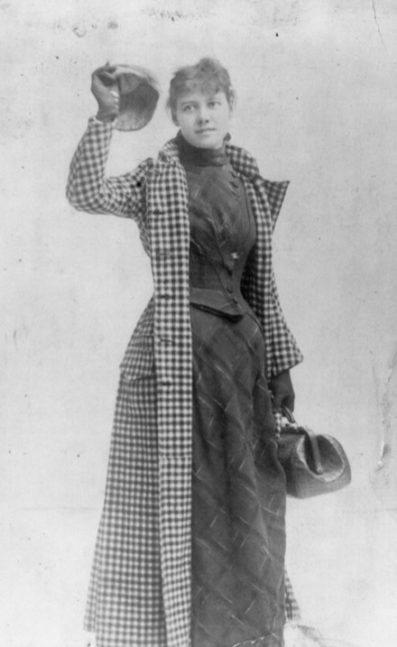

|
“No one but a man can do this.”
Her newspaper’s business manager said that to Nellie Bly, a young reporter in New York.
Do what? Go around the world in less than 80 days. That was the record in a famous novel, Around the World in Eighty Days.
She went to her editor “rather timidly.” She was afraid he’d think the idea was too wild. Then she blurted it out: “I want to go around the world!”
Then she found out the paper already had the same idea. They meant to send a man.
The business manager gave his reasons. A woman would need a protector. She’d pack too much luggage. She only spoke English. So: no one but a man.
Her answer, in her own words:
“Very well,” I said angrily, “Start the man, and I’ll start the same day for some other newspaper and beat him.”
A year later they sent for her. “Can you start around the world day after tomorrow?”
“I can start this minute,” she said.
Too much luggage? She went in one dress, with one hand-bag. Plus a jar of cold cream that kept the bag from closing. She called it “the bane of my existence.”
She sailed on November 14, 1889. She was back on January 25, 1890.
72 days. The hero of the novel needed 80.

Nellie Bly, 1890.
Photo: Library of Congress (public domain)
Here’s why I’m telling you.
Remember the first thing she said? “I want to go around the world!”
She was scared when she said it. And she said it before she knew what they wanted.
She went first.
Most of us learned love the other way round. Let him text first. Let him say “I love you” first. Find out what he wants, then work out what you’re allowed to want.
And if there’s no “him” right now? It’s the same wait. Wait till someone shows up. Then decide.
Those are dares too. The wrong kind. They all dare you to go second.
So I’m daring you to go first.
Finish this sentence about love: “I want…”
Not “I hope he…” Not “Does he…?” Just “I want.” Say it before you know what anyone else wants.
You don’t have to say it to him. You don’t have to say it to anyone.
Except maybe me.
I’ll be honest with you. A story from 1889 can’t hear your “I want.” And I can’t want it for you. That part is yours.
But I can listen. Say it to me first. I’ll take it seriously, and we’ll look at what’s under it, and what’s been making you wait.
Evelyn, I’ll go first →
One sentence is plenty. If all you’ve got is “I want… I’m not sure what yet,” that counts.
Going second feels safer. If you never say what you want, nobody can turn it down.
And years of “play it cool” teach us to keep our wants small. That habit was handed to us.
But wanting isn’t pushy. It isn’t greedy, either. It’s just honest.
First time talking to me? The first 3 minutes are on me.
Nellie waited a whole year for her chance. Then she said, “I can start this minute.” So can you.
Tell Evelyn what I want →
— Evelyn
P.S. On the way, Nellie stopped in France to meet Jules Verne, the man who wrote the 80-day novel. He told her, “If you do it in seventy-nine days, I shall applaud with both hands.” She could tell he didn’t think she’d make it. She made it in 72. I like to think he clapped. With both hands. Start here.
|